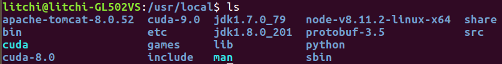
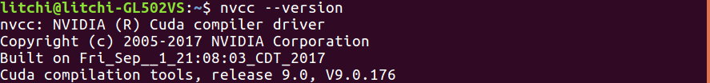
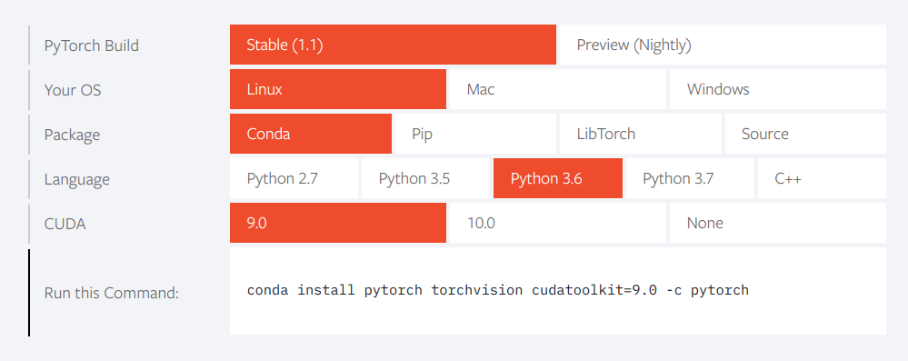

源码编译pytorch及其编译知识
1、pytorch编译的相关知识
python setup.py install的编译过程
PyTorch的编译首先是python风格的编译，使用了python的setuptools编译系统。以最基本的编译安装命令python setup.py install 为例，这一编译过程包含了如下几个主要阶段：
1 ，setup.py入口；
2，提前检查依赖项；
3，使用cmake生成Makefile；
4，Make命令——中间源文件的产生；
5，Make命令——编译三方库；
6，Make命令——生成静态库、动态库、可执行文件；
7，Make命令——拷贝文件到合适路径下；
8，setuptools之build_py；
9，setuptools之build_ext；
10，setuptools之install_lib。
setup.py文件的书写语法
Python 有非常丰富的第三方库可以使用，很多开发者会向 pypi 上提交自己的 Python 包。要想向 pypi 包仓库提交自己开发的包，首先要将自己的代码打包，才能上传分发。
Python 库打包的格式包括 Wheel 和 Egg。Egg 格式是由 setuptools 在 2004 年引入，而 Wheel 格式是由 PEP427 在 2012 年定义。使用 Wheel 和 Egg 安装都不需要重新构建和编译，其在发布之前就应该完成测试和构建。Egg和Wheel本质上都是一个 zip 格式包，Egg 文件使用.egg扩展名，Wheel 使用.whl` 扩展名。Wheel 的出现是为了替代 Egg，其现在被认为是 Python 的二进制包的标准格式。
Python 库打包分发的关键在于编写 setup.py 文件。setup.py 文件编写的规则是从 setuptools 或者 distuils 模块导入 setup 函数，并传入各类参数进行调用。
# coding:utf-8
from setuptools import setup
# or
# from distutils.core import setup
setup(
name='demo', # 包名字
version='1.0', # 包版本
description='This is a test of the setup', # 简单描述
author='huoty', # 作者
author_email='sudohuoty@163.com', # 作者邮箱
url='https://www.konghy.com', # 包的主页
packages=['demo'], # 包
)
find_packages模块
对于简单工程来说，手动增加 packages 参数是容易。而对于复杂的工程来说，可能添加很多的包，这是手动添加就变得麻烦。Setuptools 模块提供了一个 find_packages 函数,它默认在与 setup.py 文件同一目录下搜索各个含有 __init__.py 的目录做为要添加的包。
find_packages(where='.', exclude=(), include=('*',))find_packages 函数的第一个参数用于指定在哪个目录下搜索包，参数 exclude 用于指定排除哪些包，参数 include 指出要包含的包。
默认情况下 setup.py 文件只在其所在的目录下搜索包。如果不用 find_packages，想要找到其他目录下的包，也可以设置 package_dir 参数，其指定哪些目录下的文件被映射到哪个源码包，如: package_dir={'': 'src'} 表示 “root package” 中的模块都在 src 目录中。
生成脚本
有两个参数 scripts 参数或 console_scripts 可用于生成脚本。
entry_points 参数用来支持自动生成脚本，其值应该为是一个字典，从 entry_point 组名映射到一个表示 entry_point 的字符串或字符串列表，如：
setup(
# other arguments here...
entry_points={
'console_scripts': [
'foo=foo.entry:main',
'bar=foo.entry:main',
],
}
)scripts 参数是一个 list，安装包时在该参数中列出的文件会被安装到系统 PATH 路径下。如：
scripts=['bin/foo.sh', 'bar.py']用如下方法可以将脚本重命名，例如去掉脚本文件的扩展名(.py、.sh):
from setuptools.command.install_scripts import install_scripts
class InstallScripts(install_scripts):
def run(self):
setuptools.command.install_scripts.install_scripts.run(self)
# Rename some script files
for script in self.get_outputs():
if basename.endswith(".py") or basename.endswith(".sh"):
dest = script[:-3]
else:
continue
print("moving %s to %s" % (script, dest))
shutil.move(script, dest)
setup(
# other arguments here...
cmdclass={
"install_scripts": InstallScripts
}
)其中，cmdclass 参数表示自定制命令
ext_modules
ext_modules 参数用于构建 C 和 C++ 扩展扩展包。其是 Extension 实例的列表，每一个 Extension 实例描述了一个独立的扩展模块，扩展模块可以设置扩展包名，头文件、源文件、链接库及其路径、宏定义和编辑参数等。如：
setup(
# other arguments here...
ext_modules=[
Extension('foo',
glob(path.join(here, 'src', '*.c')),
libraries = [ 'rt' ],
include_dirs=[numpy.get_include()])
]
)自定义命令
Setup.py 文件有很多内置的的命令，可以使用 python setup.py --help-commands 查看。如果想要定制自己需要的命令，可以添加 cmdclass 参数，其值为一个 dict。实现自定义命名需要继承 setuptools.Command 或者 distutils.core.Command 并重写 run 方法。
from setuptools import setup, Command
class InstallCommand(Command):
description = "Installs the foo."
user_options = [
('foo=', None, 'Specify the foo to bar.'),
]
def initialize_options(self):
self.foo = None
def finalize_options(self):
assert self.foo in (None, 'myFoo', 'myFoo2'), 'Invalid foo!'
def run(self):
install_all_the_things()
setup(
...,
cmdclass={
'install': InstallCommand,
}
)依赖关系
如果包依赖其他的包，可以指定 install_requires 参数，其值为一个 list，如：
install_requires=[
'requests>=1.0',
'flask>=1.0'
]指定该参数后，在安装包时会自定从 pypi 仓库中下载指定的依赖包安装。
此外，还支持从指定链接下载依赖，即指定 dependency_links 参数，如：
dependency_links = [
"http://packages.example.com/snapshots/foo-1.0.tar.gz",
"http://example2.com/p/bar-1.0.tar.gz",
]2、编译pytorch时可能用到的
切换cuda版本
查看当前版本
nvcc --version在同时安装完cuda 8和cuda 9后，路径采用以下方法写进.bashrc中
export PATH=\$PATH:/usr/local/cuda/bin
export LD_LIBRARY_PATH=\$LD_LIBRARY_PATH:/usr/local/cuda/lib64
export LIBRARY_PATH=$LIBRARY_PATH:/usr/local/cuda/lib64
从上图可以看到cuda-8和cuda-9是单独的文件夹，但是我们在bashrc中给cuda的PATH是在cuda这个文件夹中，所以系统会在这个文件夹中找相关的文件，所以实现版本切换就是将cuda-8.0或者cuda-9.0软链接到cuda上。
切换前首先删除cuda文件夹中的东西
sudo rm -rf cuda然后进行软连接
sudo ln -s /usr/local/cuda-9.0/ /usr/local/cuda确认版本是否切换正确

切换到cuda-8同理
3、编译过程
首先为了环境的纯净性，还是先创建一个干净的anaconda虚拟环境，我创建了一个python3.6的环境
conda create -n p36torch python=3.6然后激活环境
conda activate p36torch然后按照官网的安装方式安装，可以参考官网
在conda中安装东西，为了下载速度良心建议还是把源换成清华源，换源方法：
conda config --add channels https://mirrors.tuna.tsinghua.edu.cn/anaconda/pkgs/free/
conda config --add channels https://mirrors.tuna.tsinghua.edu.cn/anaconda/cloud/conda-forge
conda config --add channels https://mirrors.tuna.tsinghua.edu.cn/anaconda/cloud/msys2/
# 设置搜索时显示通道地址
conda config --set show_channel_urls yes我们如果直接用anaconda安装pytorch其实也是ok的，方式是按照官网，选择适合自己机器的配置，官方会给出安装的命令。官网地址

这种情况下后面的 -c pytorch的意思是从pytorch的官网下载，如果没有在终端中走代理是会很慢的，所以我们可以直接把-c pytorch去掉，这时候就会从清华的源下载pytorch了。如果实在想从官网下载，可以在终端中走代理，配置方法在楼主的这篇博客中有 Linux下科学上网和在终端中使用代理的方法
然后使用的话就在conda命令前加一个proxychains4
先安装相关依赖
conda install numpy ninja pyyaml mkl mkl-include setuptools cmake cffi typing
# Add LAPACK support for the GPU if needed
conda install -c pytorch magma-cuda90 # or [magma-cuda92 | magma-cuda100 ] depending on your cuda version下载源码
git clone --recursive https://github.com/pytorch/pytorch
cd pytorch
# if you are updating an existing checkout
git submodule sync
git submodule update --init --recursive安装pytorch
export CMAKE_PREFIX_PATH=${CONDA_PREFIX:-"$(dirname $(which conda))/../"}
python setup.py install这里特别提一下，由于我在安装的时候先创建了一个新环境，所以在这里我的设定环境变量的命令就是这样子写的：
export CMAKE_PREFIX_PATH=~/anaconda2/envs/p36torch/bin由于我在编译的时候遇到了一些问题，在这个项目的issue中发现还应该加上CONDA_PREFIX的路径所以有
export CONDA_PREFIX=~/anaconda2/envs/p36torch/bin